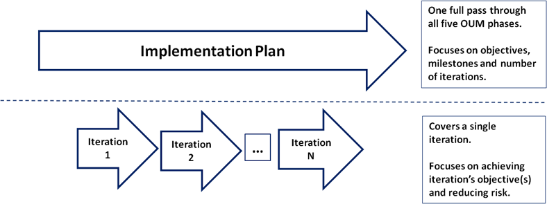
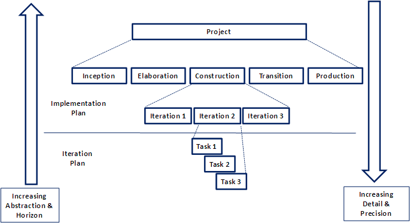
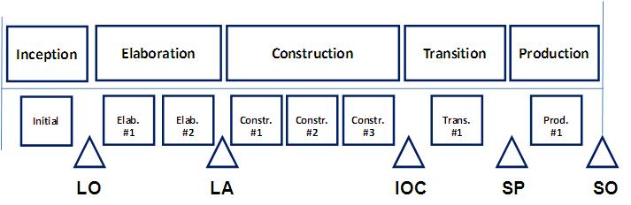
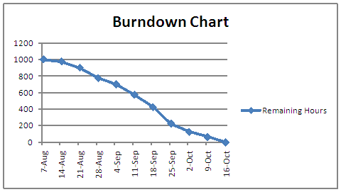

OUM |
Planning a Project using the Oracle Unified Method (OUM) - An Iterative and Incremental Approach |
||
Method Navigation |
Current Page Navigation |
||
|
|
||||||||
The Oracle Unified Method (OUM) uses the Manage focus area - Project Management Method (OUM Manage) to provide a framework in which projects can be planned, estimated, controlled, and tracked in a consistent manner. OUM is based on the Unified Process and is therefore both iterative and incremental. The intent of this approach is to provide you with a high-level guide for planning an OUM project.
Iterative development using OUM provides many benefits: major risks are identified and addressed early in the project; requirement changes are identified and prioritized efficiently; project team utilization is optimized; and progress and quality are continuously monitored and corrected.
OUM is designed to be a scalable method that can be applied to any kind of Oracle project. Plans need to be scalable for different project sizes and complexity and contain the right level of detail for the current planning horizon. Plans that are too detailed are almost instantly inaccurate and obscure key objectives. On the other hand, plans that are too high level will not allow for measurement of project progress nor keep the project team focused on their day-to-day activities.
Plans need to display the appropriate level of detail and planning horizon for specific audiences. For example, C-level executives, business area managers and external stakeholders are rarely interested in the fine details of the project. Their focus is on the release date, major milestones, business impacts, points at which major decisions must be made. On the other hand, the project team needs the details on the lower level plans to plan their daily work and measure progress.
Therefore, a layered approach to planning OUM projects is recommended. As shown below, there are two plans active in the project at any given time on an OUM project – the implementation and the Iteration Plan.

The Implementation Plan is a brief, coarse-grained outline for the project. The objectives for the project are reflected in the Implementation Plan and tie back to the Business Case developed in the OUM Envision Focus Area. The main purpose of the Implementation Plan is to provide a roadmap for achieving the project’s goals, along with a sketch of the number and purpose of each iteration needed per phase.
The Iteration Plan represents the lowest and most detailed layer of planning. An individual Iteration Plan will be created for each iteration in the project. The current Iteration Plan focuses on how an incremental set of objectives and/or functionality will be delivered within the framework of the project. The main purpose of the Iteration Plan is to lay out how the team will achieve the stated objectives for the given iteration.
In OUM, plans are created using a top-down/bottom-up approach in which the plans at each layer (implementation and iteration) are created and maintained in a simultaneous fashion. Because the plans are inter-related, it is likely that a change to a plan at one layer will cause the need for an adjustment to a plan at another layer. The planning layers are show in the figure below.

The planning starts in the OUM Manage Project Start Up phase where the focus is on the Implementation Plan. Also in Project Start Up, the initial iteration of the OUM Implement Inception phase is drafted to the degree that the project is able to move into the Inception phase.
During Inception, the Implementation Plan created in Project Start Up is further refined as more project requirements and risks are uncovered. As the project iterates through the later phases, the plans at each layer (implementation and iteration) will be adjusted based on the results of iteration assessments and as project objectives shift, as is often the case.
On any OUM project, an Iteration Plan for the upcoming iteration is created before that iteration begins. Also, the Implementation Plan must be examined to ensure it is still valid as the Iteration Plans are created and maintained.
Therefore, at any time on an OUM project the following plans should be active:
In OUM, the Implementation Plan is an outline of the project, showing the total number of planned iterations across the five OUM phases (Inception, Elaboration, Construction, Transition and Production) as well as key milestone dates for each of these iterations. The Implementation Plan will sketch out the work across the five phases by outlining the number of iterations in each phase and major milestones, as shown in the example below.

Keep in mind, that because OUM utilizes a top-down/bottom-up approach to planning, the task of developing the Implementation Plan requires the Implementation Plan and current Iteration Plan to be worked on concurrently.
The Implementation Plan presents a roadmap of the planned iterations and should summarize the following:
As part of the Implementation Planning, the number of iterations per phase will need to be determined. In general, OUM recommends using the standard number of iterations as depicted in the OUM Implement Focus Area diagram. However, there are several factors that can increase or decrease the number of iterations represented in the plan(s). The factors that would increase the number of iterations per phase are shown in table below.
| Phase | Factors |
|---|---|
Inception |
|
Elaboration |
|
Construction |
|
Transition |
|
Production |
|
Refer to the Determining the Number of Iterations technique.
Before commencing work, present the plan to the stakeholders to gain agreement on the Implementation Plan. The project team in particular should agree on the Implementation Plan.
Keep in mind that Implementation Planning, as with the other planning efforts, is done in an iterative manner. Information will be uncovered during the planning process that will necessitate amending the Implementation Plan as well as the current Iteration Plan. As the project progresses phase and iteration assessments will be conducted and feedback will be gained, which will lead to the need to adjust the plan(s).
Iteration planning is where the bulk of the planning for a project occurs. Each iteration should be planned such that a set of specific objectives are accomplished and a group of project risks are addressed. A project manager will typically analyze and manage the current Iteration Plan on a daily basis.
Risk management on any project is a dynamic process since project risks will be eliminated and additional risks will be exposed as the project progresses.
For each iteration, the top risks should be identified based on the current state of the project (i.e., progress to-date, project phase, team experience, etc.). A rule of thumb is to narrow the top risks to a list of no more than 10. Based on the list of the top 10 risks, the Iteration Plan can be developed to actively address each risk.
The scope of the iteration will be determined according to the objectives for the current iteration, team capacity and the iteration’s deliverables. These factors are discussed in the sections below.
Based upon the results of the risk analysis and the progress of the project up to this point must be refined to provide a clear set of measurable and achievable objectives for the given iteration. The objectives for any iteration should be based on the current phase the project and should relate to meeting the milestone objectives for the particular phase.
The team’s capacity is a broad measure of the amount of effort the team will be able to take on in the iteration. The team capacity must be considered when planning the scope of work for the iteration. The capacity is determined by the team’s size, availability and velocity, which refers to the speed at which a team can implement and test use cases and change requests.
As the project progresses, it is often the case that requirements are handled with less effort which results in an increase in the team’s velocity. Velocity can be used to develop the initial estimates of the duration and effort required to complete the current iteration.
A team’s velocity over time can be tracked using a Burndown Chart.

The Burndown Chart above tracks progress by showing a decrease in the remaining hours. A project team can select any measure they deem relevant to measure progress such as the number of scenarios completed, days remaining, etc.
The current team’s capacity drives the initial estimates for the effort and duration for the given iteration. These initial estimates are needed to select which objectives will be included in the Iteration Plan and will be further refined as the Iteration Planning progresses.
The deliverables should be associated with one or more of the iteration’s objectives. The iteration’s deliverables should not be confused with the OUM task work products. The work products are just a means to an end to producing the deliverable and are not necessarily related to the project’s objectives.
The most important deliverable of any iteration is the increment that will be developed. This is defined in OUM by the set of use cases and other non-functional requirements that will be achieved during the iteration. These requirements are selected from the project’s current MoSCoW list. Selecting the right set of requirements requires collaboration among all team members and should be focused on the current M’s and S’s shown on the MoSCoW list. Simply stated, the MoSCoW List registers the known business requirements. Each requirement is classified by the first letter of: Must, Should, Could or Won’t.
As the project moves along and risks are retired, the focus of the iterations can shift to filling out the needed functionality for the product under development. Also, change requests and identified defects can be addressed as the more architecturally significant use cases have been realized. To achieve the right balance the required functionality, change requests and defects must be prioritized and estimated by analyzing the MoSCoW List. See task, RD.045 - Prioritize Requirements for more information on how MoSCoW is used in OUM.
The Iteration Plan needs lay out the detailed tasks required to achieve the scope that has been established for the current iteration. This is done by selecting the appropriate tasks from the OUM WBS for the current phase of the project.
As with any OUM project, it is recommended that the project manager build the project workplan by starting with the appropriate pre-tailored view for the type of project under consideration (Solution-Driven Application Implementation, Requirements-Driven Application Implementation, etc.) and scaling the project for the given circumstances. The project workplan should focus on the tasks included in the OUM Implement Core Workflow, which identifies the core tasks within the Implement focus area.
For more information on building the Iteration Plan, refer to the following:
Resources need to be associated with each OUM task included in the Iteration Plan. The resources are assigned based on availability and matching the appropriate skill-set to the task. All OUM tasks contain a Roles and Responsibilities table that can be used when assigning resources to tasks. In addition, the Project Roles reference page provides additional information about the specifics of each role.
Once the resource assignments have been made estimates can be developed for each task associated with the iteration. The detailed estimates are determined by refining the initial capacity-based estimates through the use of traditional estimating techniques that can be augmented through a commitment-driven approach. The commitment-driven estimating approach involves asking those team members assigned to provide an estimate of how much effort will be required to complete the tasks for each requirement in the iteration.
The individual task estimates balanced with the team velocity form the basis for the estimates for the Iteration Plan. These estimates should be verified against broader estimates completed as part of the initial planning effort for the iteration.
OUM strives to minimize dependencies within the detailed Iteration Plans due to the limited duration of the plans. The key to reducing dependencies is to select relatively independent bits of functionality that can then be integrated to achieve the iteration’s objectives. However, dependencies cannot be completely eliminated and must be taken into account. This is where the project manager must work with the project team and stakeholders to do further analysis of the MoSCoW List. The dependencies for the use cases addressed in the current iteration must be reflected on the MoSCoW List must also be reflected in the detailed plan for the iteration.
Each objective must be associated with an evaluation criterion that defines how the achievement will be measured and the levels of those measurements that will be considered a success. These evaluation criteria must be clear and not subjective. The evaluation criteria must be objective and measurable so that progress toward the project’s goals can be demonstrated at the end of the iteration.
Iteration assessments are essential since iterative development is a collaborative endeavor between the project team, end users and project sponsors. The iteration assessments are important events since they uncover potential issues that could derail the iteration. They also allow the team the ability to take necessary corrective action to get the project righted. Iteration assessments include demonstrating evidence of results, open and honest review of the iteration, discussion on how to improve the next one and acceptance reviews to ensure objectives have been met and the evaluation criteria have been satisfied.
The Iteration Plan information should be compiled into a simple document. The first section of the plan should reflect the scope and objectives of the iteration. The primary goal of the scope is to make clear the iteration’s objectives, priorities and evaluation criteria. This information can be used to track the iteration’s progress and drive the iteration assessment. The rest of the plan captures the detailed plan for the execution of the iteration.
OUM project planning requires the project manager to plan the iteration by specifying the goals and then allowing the team to determine how best to achieve the goals. More information will be brought to light during the execution of an iteration that will impact the current Iteration Plan as well as the plan for the next iteration.
The Iteration Plan may need to be adjusted to account for a previously unknown requirement and/or risk. However, it is recommended that rather than re-planning the current iteration, it is important to keep the team focused on the goal of the current iteration and remove as many barriers as possible to allow the team to move forward.
Also, keep in mind that each of the layers – implementation and Iteration Plans must be kept in synch. The degree to which an iteration achieves its objectives will impact future iterations as well as milestones on the Implementation Plan. As the phase and iteration assessments are conducted, feedback will be gained which will lead to the need to adjust the plan(s).
In a large and/or complex OUM project, there may be a need to break up the expected functionality into partitions. This could include one for each major release of the product to be developed, implemented or upgraded. Projects that are more than a year in duration, those with high risk factors and/or projects where there is business value to be gained from delivery of a sub-set of the overall functionality are all candidates for the partitioned workplan approach. This approach allows risk to be spread over a number of partitions and permits business value to be delivered sooner.
In the case where the multiple partitions will be used to accomplish the project’s objectives, an overall plan should be established to map out the partitions. These partitions may be implemented serially, in parallel or staggered. Each partition should be planned so that the delivery of some subset of the project benefits are realized through the delivery of working software and/or implementation of Commercial Off-the-Shelf Software (COTS). This is done by examining the business drivers and schedule goals for the project, laying out the work and assigning the milestones in the roadmap to one or more partitions.
Once the overall plan for the partitions is established, the planning details can be pushed to the lower level Implementation and Iteration Plans for each partition. As the project progresses through the first partition and subsequent partitions, more information is brought to light that will require the plans at each layer to be adjusted.
OUM recommends a layered approach to project planning rather than a single, highly detailed plan. Planning and managing at each layer (implementation and iteration) frees the project manager and project team from the need to create and “feed” detailed plans that have a tendency to quickly become out of date and unwieldy. The layered planning is scalable and empowers the team to focus on the key goals, measurements, milestones and controls that enables effective project management.
This page was made possible through the collaboration with numerous OUM contributors as well as the conglomeration of information from several outstanding books and websites:
|
|
|
|
|
|

Copyright © 2006, 2016, Oracle and/or its affiliates. All rights reserved.